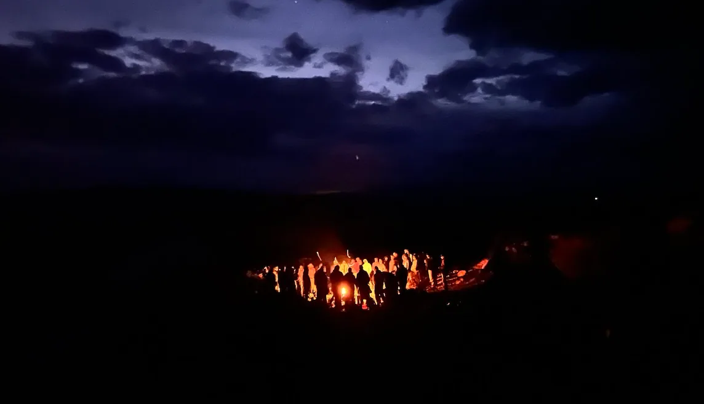

B1049 · Back from the Desert with a Message...
Hi {first_name},
I returned home late Monday night after spending six days in the California desert (Death Valley area), and man, what a game-changer.
Surrounded by 70 men all willing to dive deep, doing my own personal work has left me still beyond capacity with soul nourishment.
 Being out in that quiet desert space, everything intensified—my thoughts, emotions, sensations, reflections—all of it.
I had never experienced the desert before and being with no cell or wifi, I got to feel part of myself that had been dormant.
I'll be dropping a podcast soon to share some of my major takeaways and what went down, but one thing in particular hit me hard was the struggle many of us men face..
Balancing providing for family while striving to be our best selves in all aspects of life, all while maintaining the life force it takes to do it well—it's a constant battle for many of us.
As was discussed at the event with leader and head, John Wineland, we have two components to take into account as we self assess as men - our intent and our energy.
Intent keeps us grounded, like an anchor, focused, and on a trajectory.
And energy is what flows in and through us as we walk the path.
Too many times to count, many of us men may have shown up in life with strong intentions, but weak energy.
And that lack has a significant impact.
The quality of change we can create in life, and more importantly, sustain that level of change, largely depends on the energy, and flow of it, we have on board.
But too often, as men, we're running on empty.
Does that resonate?
It's sometimes a harsh reality we don't want to confront, but it's often the truth.
If we don't come to terms with it, who suffers?
Everyone in our life.
That's why I'm evolving a few things.
One is how I plan to run the upcoming Men of Movement Retreat to target a different issue....
This experience is called - RESET.
By getting out in nature, while eating top-quality food, we'll be addressing key things such as:
All of these will affect the way we show up in the world.
Because let's face it, our energy levels affect everything.
This experience is going to be smaller, intimate, and personalized AF.
Each guy will get the full treatment—mind, body, and spirit reset with 1:1 sessions from myself and each facilitator present.
Click this link to learn more details regarding this Men of Movement RESET Retreat.
Also, in this link is an effective six-minute breathwork routine you can use to cleanse and clear your body/mind whenever you feel stagnant.
Let's do this! -Mike
P.S. My NEW free online men's community just launched and in just one day we have 25 men in the group! You will also find out info on how to sign up all on the same link I mentioned above, just scroll down under the event information area. |